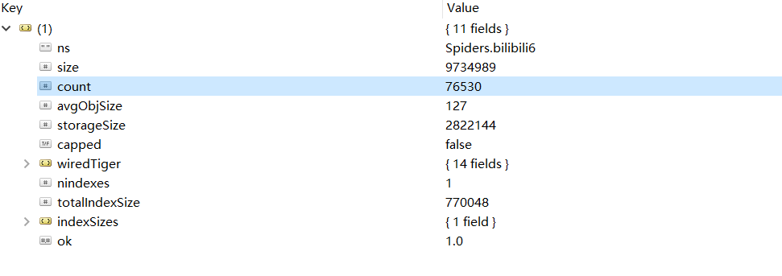

直播行业已经火热几年了，几个大平台也有了各自独特的“弹幕文化”，不过现在很多平台直播比赛时的弹幕都基本没法看的，主要是因为网络上的喷子还是挺多的，尤其是在观看比赛的时候，很多弹幕不是喷选手就是喷战队，如果看了这种弹幕，真是让比赛减分不少。
但和别的平台比起来，B 站的弹幕会好一些。正好现在是英雄联盟的世界总决赛时间，也有不少人选择在 B 站看比赛直播，那么大家在看直播的时候会发什么弹幕呢？话不多说，这就用 Python 写个爬虫来爬取 B 站直播时的弹幕吧！
首先打开 Bilibili，然后找到英雄联盟比赛的直播间：
我得到的直播间的链接为：https://live.bilibili.com/6?broadcast_type=0&visit_id=8abcmywu95s0#/，这个链接中的 broadcast_type 和 visit_id 是随机生成的，不过对我们的爬取也没影响，只要找到直播间的链接就好了。
打开开发者工具，切换到 NetWork，点选上 XHR，在其中能找到一个请求：https://api.live.bilibili.com/ajax/msg。这个请求需要四个参数（roomid，csrf_token，csrf，visit_id），其中 roomid 为直播间的 id，csrf_token 和 csrf 可以从浏览器上 copy，visit_id 为空。该请求返回的结果中包含十条弹幕信息，包括弹幕内容、弹幕发送人昵称等等。所以要获得更多弹幕内容，我们只需要一直发送这个请求就 OK 了！
通过前面的分析可以发现要爬取 B 站直播弹幕还是很轻松的，但是要得到大量弹幕可能就需要考虑使用多线程了。对于爬取到的弹幕，还要及时地保存下来，这里我选择使用 MongoDB 数据库来保存弹幕信息。在爬取直播弹幕的时候，我开了四个线程来爬取，开了两个线程来解析和保存数据，线程之间使用队列来处理数据。
这里建了两个类 CrawlThread 和 ParseThread，CrawThread 是用于爬取弹幕的线程，ParseThread 是用于解析和保存弹幕的线程，两个类都继承了 threading.Thread，并重写了 run() 方法。下面是爬取弹幕的代码内容：
1 class CrawlThread(threading.Thread):
2 def __init__(self, url: str, name: str, data_queue: Queue):
3 """
4 initial function
5 :param url: room url
6 :param name: thread name
7 :param data_queue: data queue
8 """
9 super(CrawlThread, self).__init__()
10 self.room_url = url
11 self.room_id = re.findall(r"/(\d+)\?", url)[0]
12 self.headers = {
13 "Accept": "application/json, text/plain, */*",
14 "Content-Type": "application/x-www-form-urlencoded",
15 "Origin": "https://live.bilibili.com",
16 "Referer": "",
17 "Sec-Fetch-Mode": "cors",
18 "UserAgent": get_random_ua()
19 }
20 self.name = name
21 self.data_queue = data_queue
22
23 def run(self):
24 """
25 send request and receive response
26 :return:
27 """
28 while 1:
29 try:
30 time.sleep(1)
31 msg_url = "https://api.live.bilibili.com/ajax/msg"
32 # set referer
33 self.headers["Referer"] = self.room_url
34 # set data
35 data = {
36 "roomid": self.room_id,
37 "csrf_token": "e7433feb8e629e50c8c316aa52e78cb2",
38 "csrf": "e7433feb8e629e50c8c316aa52e78cb2",
39 "visit_id": ""
40 }
41 res = requests.post(msg_url, headers=self.headers, data=data)
42 self.data_queue.put(res.json()["data"]["room"])
43 except Exception as e:
44 logging.error(self.name, e)下面是解析和保存弹幕的代码内容，主要是一直查询队列，如果队列中有数据，就取出来进行解析和保存：
1 class ParseThread(threading.Thread):
2 def __init__(self, url: str, name: str, data_queue: Queue):
3 """
4 initial function
5 :param url: room url
6 :param name: thread name
7 :param data_queue: data queue
8 """
9 super(ParseThread, self).__init__()
10 self.name = name
11 self.data_queue = data_queue
12 self.room_id = re.findall(r"/(\d+)\?", url)[0]
13 client = pymongo.MongoClient(host=MONGO_HOST, port=MONGO_PORT)
14 self.col = client[MONGO_DB][MONGO_COL + self.room_id]
15
16 def run(self):
17 """
18 get data from queue
19 :return:
20 """
21 while 1:
22 comments = self.data_queue.get()
23 logging.info("Comment count: {}".format(len(comments)))
24 self.parse(comments)
25
26 def parse(self, comments):
27 """
28 parse comment to get message
29 :return:
30 """
31 for x in comments:
32 comment = {
33 "text": x["text"],
34 "time": x["timeline"],
35 "username": x["nickname"],
36 "user_id": x["uid"]
37 }
38 # print(comment)
39 self.save_msg(comment)
40
41 def save_msg(self, msg: dict):
42 """
43 save comment to MongoDB
44 :param msg: comment
45 :return:
46 """
47 try:
48 self.col.insert_one(msg)
49 except Exception as e:
50 logging.info(msg)
51 logging.error(e)从比赛开始到比赛结束，总共爬取到了76530条弹幕，在 Robot 3T 中截图如下：

弹幕信息已经存好了，但是考虑到其中有很多表情等无用内容，所以需要将这些内容给清洗掉。清洗结束之后就能够进行分词操作了，这里我选择用 jieba 库来处理，在使用 jieba 的时候，可以设置用户词典，因为像选手 ID，英雄名称这些内容是会被分词的，但设置用户词典之后就不会被分词了，设置方法如下：
jieba.load_userdict("userdict.txt")
userdict.txt 中保存了选手 ID，选手外号，英雄名称等内容，在设置了用户词典后，这些内容在分词的时候都不会被分开了。在分词结束之后，需要将那些长度为1的部分清除掉，然后将出现频次高的内容提取出来，这里用到了 collecttions 中的 Counter，利用 Counter 可以很方便地统计频次。这一部分代码内容如下：
1 def get_words(txt: str) -> str:
2 """
3 use jieba to cut words
4 :param txt: input text
5 :return:
6 """
7 # cut words
8 seg_list = jieba.cut(txt)
9 c = Counter()
10 # count words
11 for x in seg_list:
12 if len(x) > 1 and x != '\r\n':
13 c[x] += 1
14 result = ""
15 for (k, v) in c.most_common(300):
16 # print('%s %d' % (k, v))
17 result += "\n" + k
18 return result在进行完上述操作之后，就可以使用 wordcloud 这个库来生成词云了，生成词云时可以设置停止词和字体，这一部分的代码如下：
1 def generate_word_cloud(text):
2 """
3 generate word cloud
4 :param text: text
5 :return:
6 """
7 # text cleaning
8 with open("stopwords.txt", "r", encoding='utf-8') as f:
9 stopwords = set(f.read().split("\n"))
10 wc = WordCloud(
11 font_path="font.ttf",
12 background_color="white",
13 width=1200,
14 height=800,
15 max_words=100,
16 max_font_size=200,
17 min_font_size=10,
18 stopwords=stopwords, # 设置停用词
19 )
20 # generate word cloud
21 wc.generate("".join(text))
22 # save as an image
23 wc.to_file("rng_vs_skt.png")最终生成的词云图为：
可以看到很多人都在讨论 faker 的，李哥还是李哥啊，李哥的瑞兹也是强的不行，也有不少弹幕在说天使和加里奥的问题，不得不说，小虎小明的发挥是有问题的，此外还有一些说喷子的，看来 B 站的喷子也不少啊。
完整代码已上传到 GitHub！